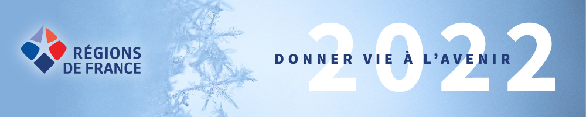

<nav class="background-primary-color mb-5 container-fluid d-flex justify-content-around align-items-center">
  <div>
    <a class="btn text-uppercase text-white m-3" color="primary" routerLink="/">Accueil</a>
    <a class="btn text-uppercase text-white m-3" color="primary" routerLink="/regions">Régions</a>
    <a class="btn text-uppercase text-white m-3" color="primary" routerLink="/departements">Départements</a>
    <a class="btn text-uppercase text-white m-3" color="primary" routerLink="/commune">Communes</a>
  </div>  
</nav>
<router-outlet></router-outlet>